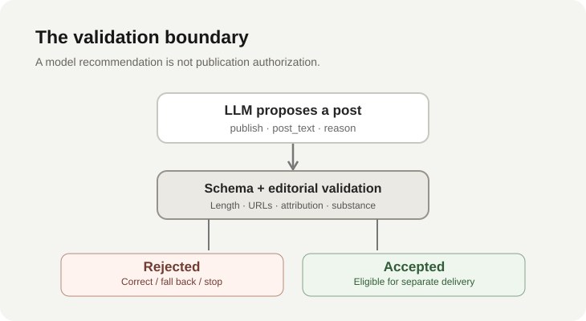
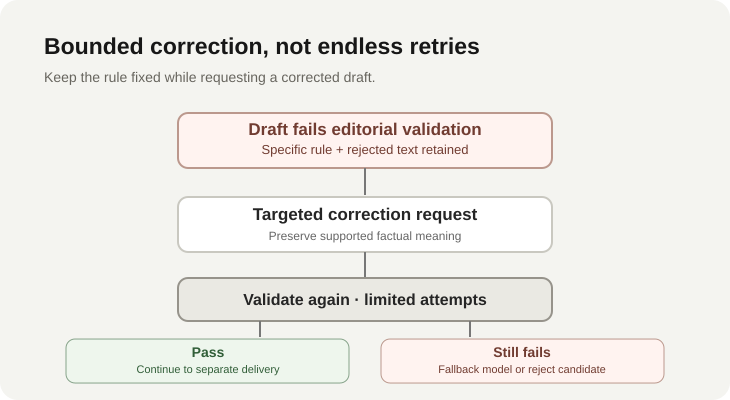

My AI publishing pipeline generated a social media post that sounded perfectly reasonable. The application refused to publish it.
The error was specific: ValueError: Social post uses multiple-source attribution. Then it happened again.
I encountered this while developing an automated social publishing workflow for Axon Review, an AI news intelligence platform I've been building independently. The workflow selects eligible stories, asks a language model to decide whether a social post is warranted, and prepares suitable posts for delivery.
The writer generated language that violated an attribution rule enforced by the application. Instead of accepting the output because it came from a model, the software rejected the drafts. The failure was frustrating, but the boundary did exactly what it was supposed to do.
An LLM can propose an action. That doesn't mean the application should permit it.
The failure was in generation. The protection was in validation.
A social publishing system needs more than fluent text. Its output must fit the destination platform, follow an editorial policy, and make claims that can be supported by the supplied news evidence.
In this implementation, publishing a post requires substantive text, an explanation for the publication decision, compliance with a configured character limit, and the absence of unexpected links. It also requires appropriate attribution language.
One prohibited category is vague multiple-source attribution. Patterns equivalent to “according to multiple reports” trigger a validation error. During development, the writer repeatedly generated language that fell into this category.
A tempting response would have been to relax the rule until the writer succeeded. But doing so would confuse a model's output with the application's requirements. The rejection made the mismatch visible before it became a public post.

A structured answer is not necessarily an acceptable answer
The writer is asked for a structured decision with three fields: publish, post_text, and reason.
That contract is useful. It distinguishes a decision to skip a story from a decision to publish a particular piece of text. It also lets application code parse the result without trying to infer intent from a free-form paragraph.
But a schema only constrains shape. A perfectly valid string can still violate the product's editorial rules.
The next layer therefore checks more specific properties. The current validator normalizes whitespace and accepted alert prefixes, rejects empty or non-substantive text, enforces the configured 280-character limit, and rejects unexpected URLs. Regular-expression checks cover several disallowed multiple-source attribution patterns. When source evidence is available, an additional check looks for more than one named source in an attribution clause.
None of these checks proves that the entire post is factually accurate. They enforce a narrower set of conditions the application can specify and test.
Schema validity, editorial compliance, and factual correctness are separate questions. Treating them as interchangeable creates a false sense of safety.
Prompts guide behavior. Application code enforces rules.
Prompt improvements can reduce recurring errors. Clear instructions about tone, attribution, length, and the intended audience are valuable.
But prompt instructions are not guarantees. A model can prioritize another part of the request, generalize a familiar writing pattern into an unsuitable context, or produce an edge case that wasn't present during earlier tests.
This is why enforceable constraints should not live exclusively inside model instructions.
When a requirement is crisp and machine-checkable, conventional software should verify it. Character limits and disallowed URLs are straightforward examples. An explicit editorial phrase policy can also be encoded as validation logic, with the understanding that such a policy may be incomplete.
More interpretive questions still require judgment: Is the report significant? Does the text fairly represent the underlying news? Is a claim supported by context? A simple regular expression cannot settle those questions.
The engineering objective isn't to eliminate probabilistic reasoning. It's to place it where it is useful, and not ask it to enforce constraints that code can check more reliably.
Rejection should produce controlled recovery
A validator that only returns “invalid” can protect the publishing account, but it gives the writer little help recovering.
The current social-publishing implementation uses a bounded correction path. After a ValueError, the writer can receive the validation error and rejected draft, along with a request to correct the decision while preserving its supported factual meaning.
That last detail matters. Fixing a prohibited attribution phrase shouldn't quietly change the news claim itself.
The system limits editorial attempts per configured model. If the writer continues to fail, it can advance to the next configured model. If the configured writers cannot produce a valid decision, the candidate fails evaluation rather than becoming an accepted post. The outer workflow can then consider a different eligible candidate.

A retry is not permission to weaken the policy. Nor does retrying prove the next answer will be correct. It is simply one recovery mechanism with explicit limits.
The exact historical root cause of the repeated attribution failures hasn't been established from the error logs alone. They show a real disagreement between generated text and the validator, not whether the prompt, model, policy, or their interaction was solely responsible.
The validator deserves scrutiny, too
Deterministic does not mean infallible.
A regular-expression rule can be consistent and still be overly broad. It can reject an innocuous sentence or miss an alternative wording with the same underlying problem. A source-name matching rule can face ambiguity when publication names overlap ordinary words.
That's why a reliable validator needs its own tests: representative accepted examples, rejected examples, and edge cases from actual failures. The rule should have an explicit rationale, not merely exist because an earlier draft was inconvenient.
When a generated post fails validation, the correct debugging question has two parts: Why did the model produce this? and Did the application reject it for the right reason?
Both matter. Automatically blaming the model would be as unhelpful as automatically removing the validator.
Keep publication separate from generation
The most consequential boundary is the one before an external side effect.
A model returning publish: true should not, by itself, trigger a social media API call. The candidate still needs to pass application validation and enter a separate delivery path.
This separation also clarifies failure recovery. A draft rejected before acceptance is not the same as an accepted post whose network delivery times out. The first problem belongs to generation and editorial validation. The second involves remote side effects, delivery records, and safe retry semantics.
Conflating these failure modes makes automation brittle. In a public publishing product, they should be represented and handled distinctly.
Start with a small, explicit contract
Production safeguards don't require a large policy engine. In a small AI application, I'd start with a narrow output schema, a short list of testable invariants, useful validation errors, bounded correction attempts, and a distinct authorization boundary before any external action.
Add complexity in response to observed failure modes. Preserve rejected examples as regression tests. Measure the rate and reasons for rejected generations when the workflow has enough traffic to make those measurements meaningful.
This pattern applies beyond social publishing. The same principle matters when an AI system drafts emails, prepares database updates, processes documents, or proposes actions through external tools.
The model may be excellent at interpreting ambiguous information. That doesn't make it the right authority to decide whether a particular side effect is allowed.
The real lesson
Repeated attribution failures were inconvenient during development. They also demonstrated something useful: unacceptable output could be identified and stopped before publication.
That observation doesn't establish that the validation rules are perfect, nor that every attempted correction eventually succeeded. It establishes something narrower and more defensible: the workflow did not depend solely on the language model following its instructions.
Let the model handle uncertainty where reasoning is useful. Let software enforce the constraints that shouldn't be uncertain.
The goal isn't to make language models deterministic. It's to build systems that remain dependable when they aren't.